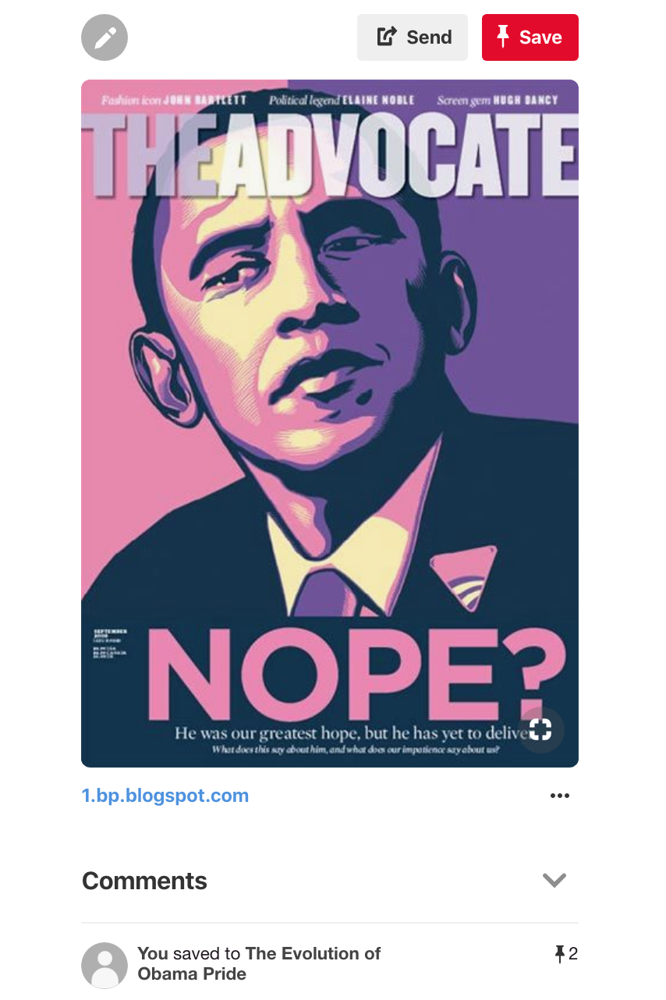

Obama, Hope, and Same-Sex Marriage
Issues of difference have intimately been connected with Obama since the beginning of his presidential campaign. The narrative constructed around Obama’s life during his 2008 campaign initially emphasized that he was unlike previous candidates: “African father from Kenya, white mother from Kansas, raised in Indonesia and Hawaii on modest incomes and educational scholarships…Obama marked the ways his racial class and geographic origins made him unusual (queer) presidential material” (Rohrer 110). Despite Obama's race, class, and geography signaling that difference can be a hope for a brighter future, his stance on same-sex marriage remained relatively conservative. In 2004, for instance, he made a statement defining marriage as between a man and a woman and claimed that he did not see same-sex marriage as a civil right even though he had long favored civil unions (Dwyer). Later, he publicly opposed Proposition 8—a state-level ban on same-sex marriage. Obama found himself in a precarious political position in regard to Prop 8, as his personal beliefs, potential alienation of religious supporters, and his beliefs about the role of the constitution in granting or restricting rights to Americans intersected. In a 2008 interview with MTV, Obama clarified his conflicting public stances on state constitutional amendments defining marriage stating the following:
I’ve stated my opposition to this. I think [Prop 8 is] unnecessary. I believe marriage is between a man and a woman. I am not in favor of gay marriage. But when you start playing around with constitutions, just to prohibit somebody who cares about another person, it just seems to me that’s not what America’s about. Usually, our constitutions expand liberties, they don’t contract them (Belonsky).
The tensions present in Obama’s stance on same-sex marriage, in conjunction with Prop 8 appearing on the same ballot as Obama’s presidential bid, kept same-sex marriage in the spotlight during much of his campaign (Wildermuth).
In light of Obama’s stance toward gay marriage, the Obama Hope image was invoked in the fight against Prop 8 in various ways as well as in critiques of Obama’s conservative position. Protest signs, for instance, with the word "Hope" replaced with the words "Fail" and "Fraud" made appearances at rallies for Prop 8 in Los Angeles and other cities. In addition, The Advocate (an LGBT publication) called out Obama for his lack of support in August of 2009. According to The Advocate’s editor-in-chief, Jon Barrett, the cover image and accompanying article were meant to capture the growing frustration felt by gay voters who believed they were not seeing the payoffs, such as repealing the Defense of Marriage Act and Don’t Ask, Don’t Tell, promised during the election (Mirchandani). The issue’s cover story captured this disappointment and concern:
“…during his first months in office, while he [Obama] worked with Congress on the economic stimulus package and the wars, and laid `groundwork for legislation to protect the environment and reform health care, we were on our best behavior, waiting for him to reveal his plans to keep his promises to us…. Unquestionably, a lot of us have been patient about progress on gay civil rights during these first months because we are still traumatized by the culture wars. We fought hard to get this president and Congress elected, and we don’t want to mess up their chance to fix what’s broken. But the window of opportunity for bold action on gay rights at the federal level grows narrower every day. (Gross).
To advertise this cover story, The Advocate cover featured the Obama Hope image illustrated in lavenders and pinks. The official Obama logo on his right lapel was replaced with an upside-down pink triangle. The use of pink and inclusion of the triangle—a symbol that had become a rallying cry for the LGB community during the AIDS crisis—and the use of lavender which is often used to denote gay and lesbian communities (Betty Friedan infamously referred to lesbians as the lavender menace and claimed they hampered the feminist movement, as well as, the mass firing of gay and lesbian government employees during the 1930s and 40s being referred to as the Lavender Scare) make direct ties between Obama and less celebratory moments in LGB history. The word “Hope” was replaced with “Nope?”, most likely reflecting Obama’s unkept promises.
Figure 1. Screen Shot of The Advocate Cover Pin.
In late 2010, as Obama began to hint at shifts in his stance on same-sex marriage, so too did the Obama Hope image shift in form and substance. Such a change started slowly, with Obama simply and publicly stating that his feelings were evolving, even though he still favored civil unions rather than marriage for same-sex couples (Dwyer). In a press conference given at the White House, Obama addressed his continuing evolution on his stance in regard to same-sex marriage:
At this point, what I’ve said is, is that my baseline is a strong civil union that provides them the protections and the legal rights that married couples have. And I think — and I think that’s the right thing to do. But I recognize that, from their perspective, it is not enough. And I think this is something that we’re going to continue to debate, and I personally am going to continue to wrestle with going forward” (Shackelford & Lebling).
In December of the same year, Obama signed the repeal of Don’t Ask, Don’t Tell (which prevented gay men and lesbians from openly serving in the military), the first step of an institutional tie between Obama and gay rights. Then, in May of 2012, the year of Obama’s second presidential campaign and the year that support for same-sex marriage became the majority opinion, Obama officially announced his support for gay marriage. In an ABC News interview, Obama states “At a certain point, I've just concluded that—for me personally, it is important for me to go ahead and affirm that—I think same-sex couples should be able to get married” (Steinmetz). With Obama becoming the first US President ever publically to endorse same-sex marriage, Newsweek quickly declared Obama “the first gay president” (Schwarz). The printed cover featured a headshot of Obama with a rainbow-colored halo, but one of the first designs to be considered for the cover was the Obama Hope image painted in a rainbow of color (Stableford).
In 2015, we witness even more changes in the Obama Hope image after the US Supreme Court overturned the Defense of Marriage Act (DOMA) in June of that year, making same-sex marriage legal in all 50 states. With his official statement of support for the Supreme Court’s ruling, Obama’s “evolution" regarding same-sex marriage, in conjunction with the overturning of Don't Ask, Don't Tell and DOMA, had come full circle. In fact, in many people's eyes, Obama had become a gay rights pioneer. For example, The Human Rights Campaign—the US's largest LGBTQ civil rights organization—published a tribute to Obama’s work in regard to LGBTQ rights and visuality, arguing that “Barack Obama’s legacy of achievement for LGBTQ people is unmatched by any president in American history.” The tribute cites actions taken by Obama such as naming Stonewall as the first LGBTQ national monument and his executive policies as evidence of Obama’s support for LGBTQ equality (Miller).
The Obama Hope imagery, which had initially been used to call out and question Obama and then slowly evolved to signify him an ally, took on an even more celebratory tone. Soon after DOMA was overturned, the Obama Hope image appeared against rainbow backgrounds, with the word “Hope” replaced with words such as “Pride” and “Evolved.” Versions of the original image with the words “Change” or “Victory” were also featured in articles referencing the “victories” of the LGB community. Such changes in Obama's stance toward same-sex marriage and the parallel transformation of Obama Hope are an integral part of LGBT history in the United States that needs to be documented and archived.
Next SectionBack to Top